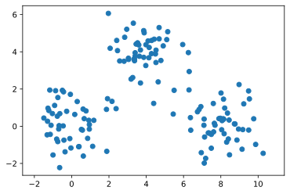
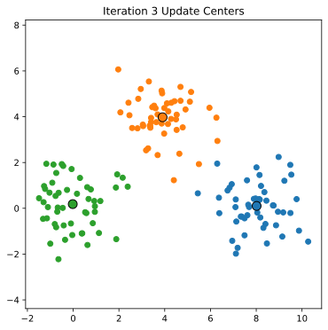

Week 9: K-Means Clustering And Some Applications
Chris Tralie
We're now going to consider another unsupervised algorithm that has a model of geometric structure in our data, namely a "cluster." To get at it, let's generate and plot the following 2D dataset in matplotlib:
It looks like there are three distinct groups, or "clusters" of points here. As it turns out, making this notion precise is quit challenging, and there are many models for what constitutes a cluster. But at this stage of the course, we'll consider a constructive model of a cluster by following a simple geometric algorithm known as KMeans Clustering. The steps are as follows:
Algorithm: KMeansClustering(X, K)
Where X is a set of N points in d Euclidean dimensions, which we're representing as a data matrix above, and K < N is some a priori number of clusters that we think are in the data
- Choose K random points in the dataset called centers
- For each data point xi ∈ X, find the nearest cluster center, according to some distance
- Replace the coordinates each cluster center with the mean of the points that were closest to that center.
- Repeat steps 2 and 3 for some number of iterations
Below is an animation showing successive applications of steps 2 and 3 on the above data, assuming that there are 3 clusteres

At some point, we converge; that is, the assignment of points to cluster centers remains fixed, and so the updated cluster centers don't change. It only takes 4 iterations for us to converge in the above example:
Your task: Implement KMeans clustering to find the clusters of the above point set. What happens when you choose K = 2 vs K = 3 vs K = 4?
Application: 3D Shape Clustering
We can apply the KMeans algorithm to find clusters of like objects in a dataset, even if we don't have labels on the data. You will apply this to clustering 3D shape in homework 5a.
Application: Image Quantization / Cartoonization
There are some cool applications in image processing, which I wrote a computational essay about below (Click here to download the jupyter file and here to download the image I was using)
{kind=link}